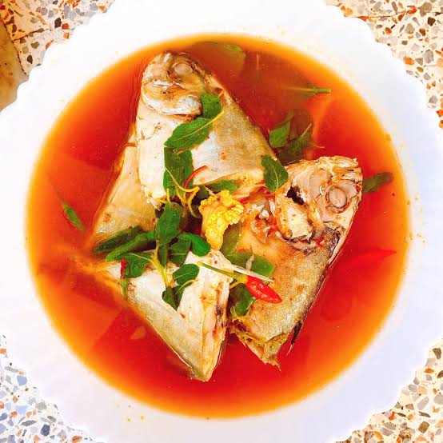
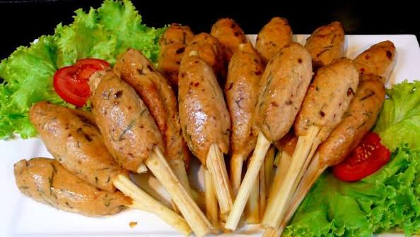
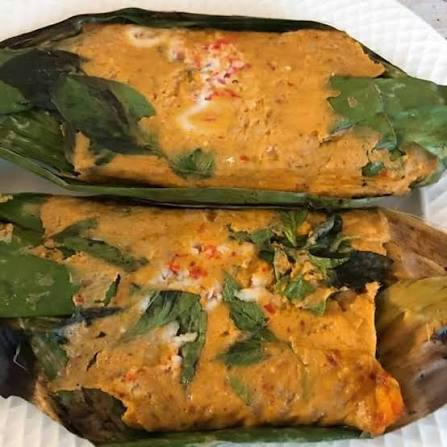
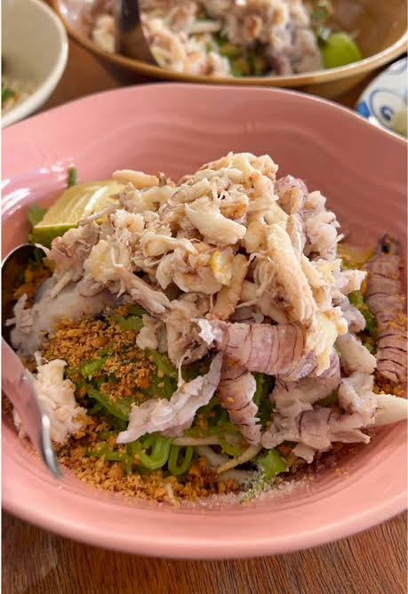
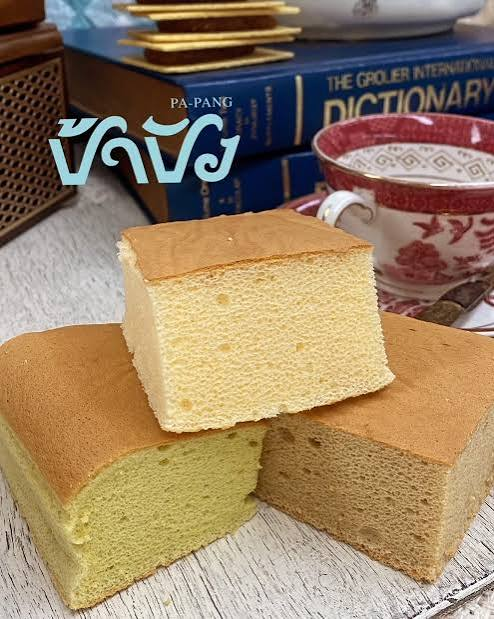
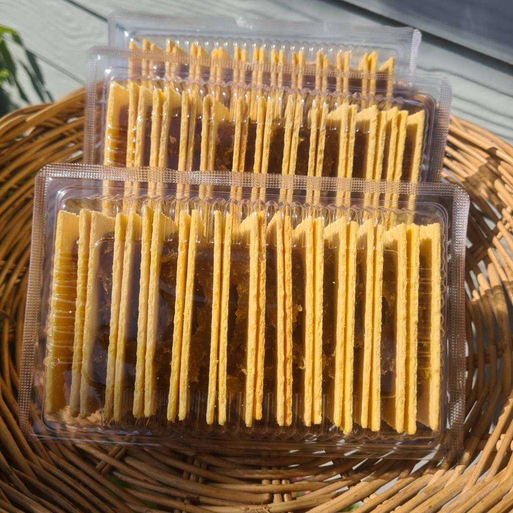
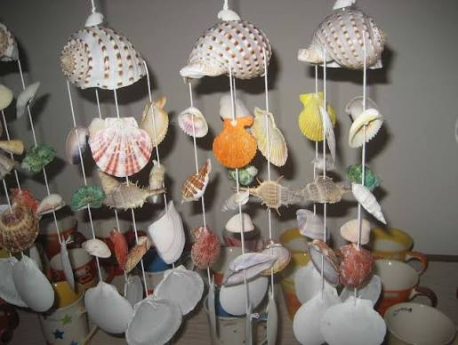

อาหารและของฝากประจวบคีรีขันธ์
อาหารแนะนำ
|
 รสชาติจัดจ้าน หอมใบกะเพราสไตล์พื้นถิ่น |
 ของกินเล่นยอดนิยม หอมเครื่องแกงและเนื้อปลาแน่น |
 หอมกลิ่นใบตองย่าง เครื่องทะเลสดเต็มคำ |
 เนื้อปูเน้นๆ รสกลมกล่อม ขึ้นชื่อย่านอ่าวน้อย |
ของฝากประจวบคีรีขันธ์

ของฝากขึ้นชื่อจากทะเลประจวบฯ เก็บไว้ได้นาน |
 เค้กเนื้อนุ่มสูตรดั้งเดิมย่านคลองวาฬ |
 หอมหวานเปรี้ยวกำลังดีจากสับปะรดท้องถิ่น |
 งานฝีมือท้องถิ่นน่ารักๆ เหมาะซื้อเป็นของที่ระลึก |